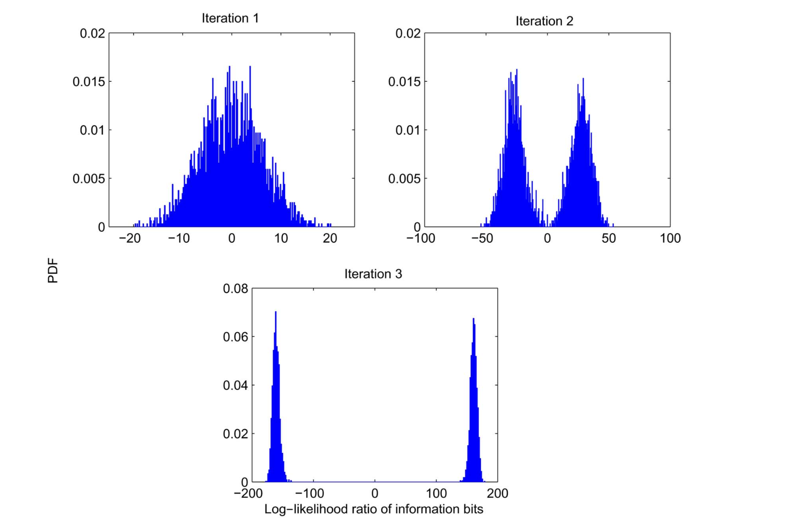
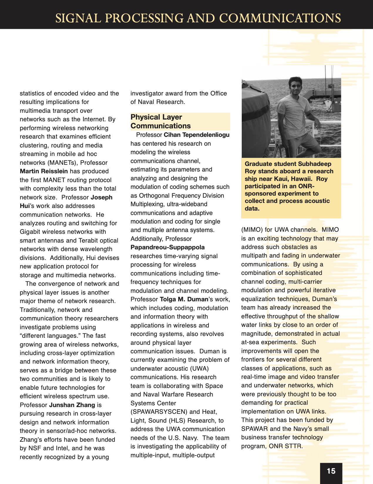

ONR-Sponsored At-Sea Underwater Acoustic Communications Experiment
Field experiment near Kauai involving real-time acoustic data collection, waveform and error-correcting code design, and onboard signal processing under severe shallow-water multipath conditions.
Key Contributions
- Achieved a 10x improvement in data rates with improved reliability in extremely hostile communication environments.
- Designed iterative inference algorithms for hidden-state estimation under highly distorted and noisy underwater acoustic communication channels.
- Designed belief propagation algorithms over the factor graph of frequency-selective communication channels. Publication (Pdf)
-
Applied iterative uncertainty refinement through turbo equalization for
near error-free communications.
Publication
(Pdf)

Progressive uncertainty refinement across turbo equalization iterations. The posterior distribution sharpens from diffuse uncertainty toward highly separable confident states through iterative probabilistic inference and message passing. - Conducted real-time experiment and signal design under extremely tight time and schedule constraints.
Peer Reviewed Publications
